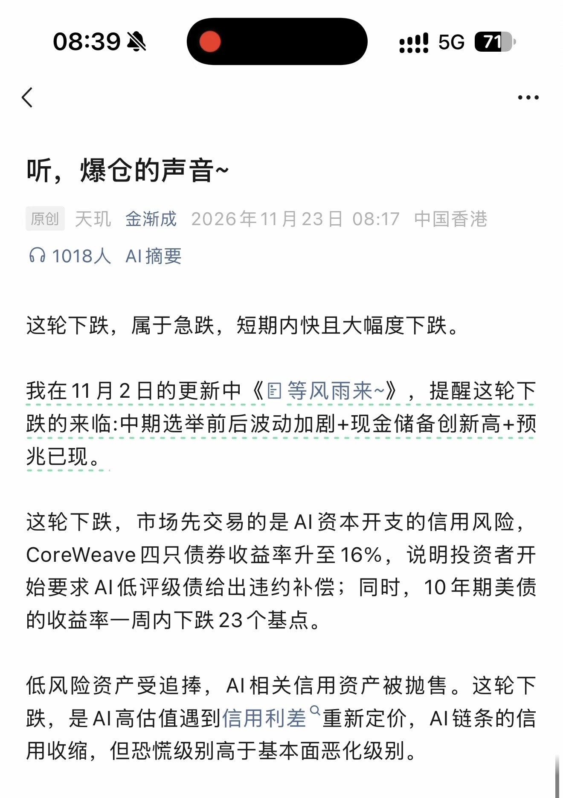
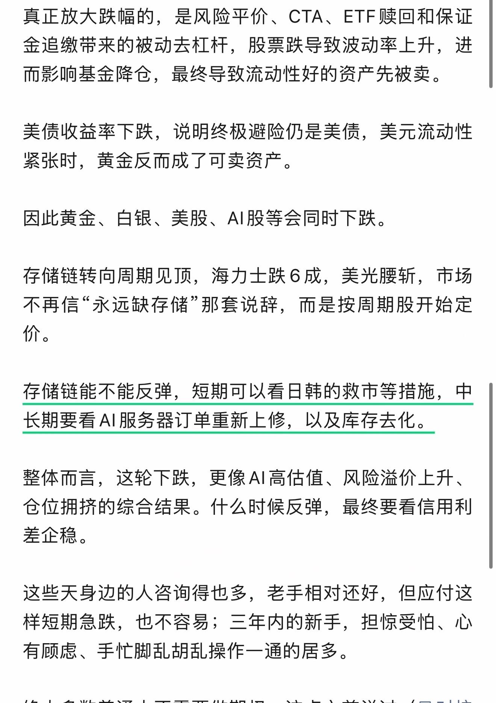
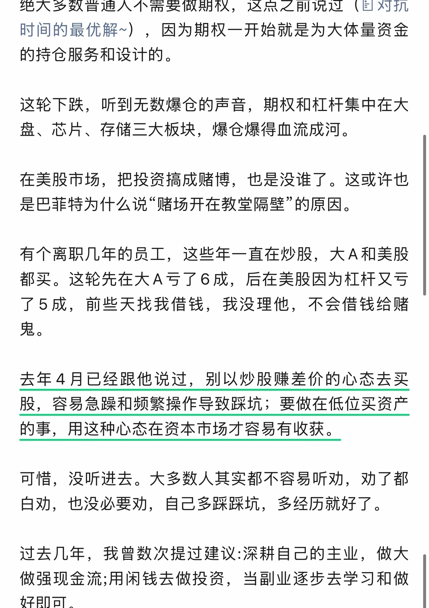
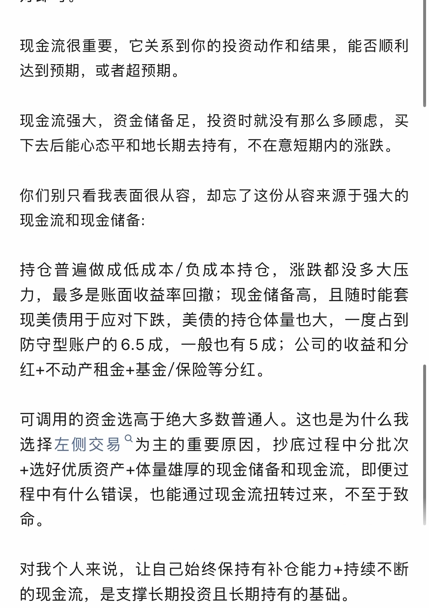
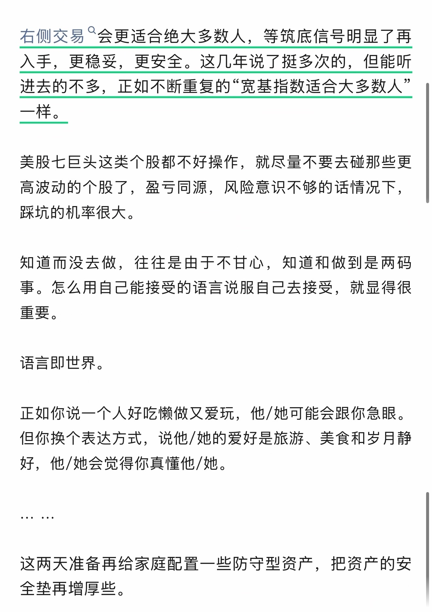
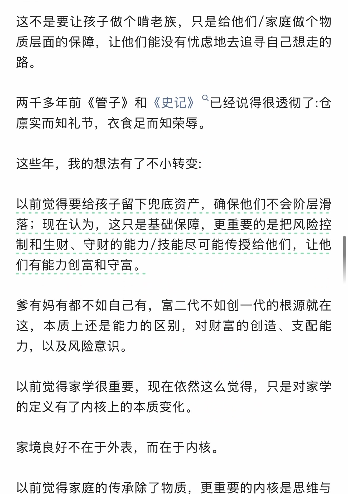
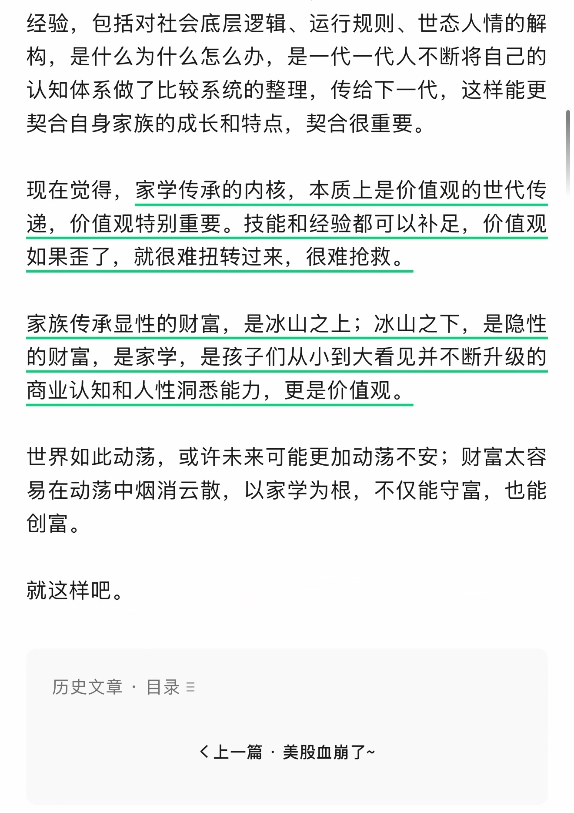
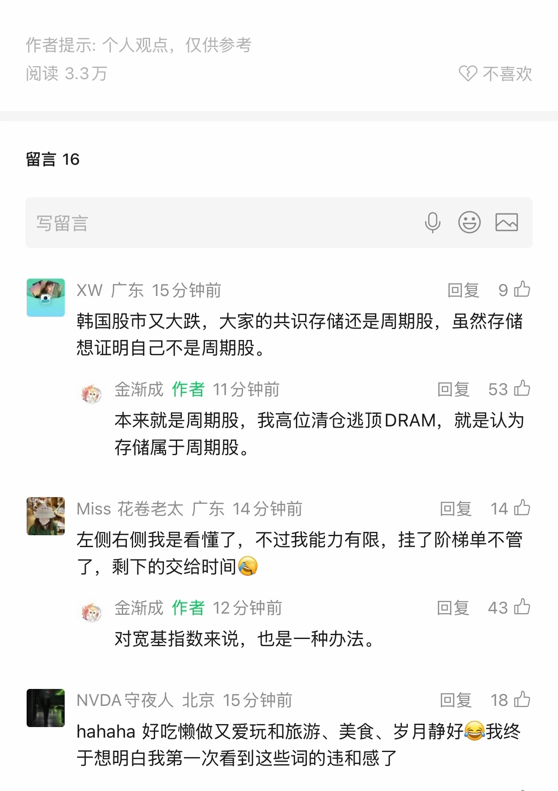
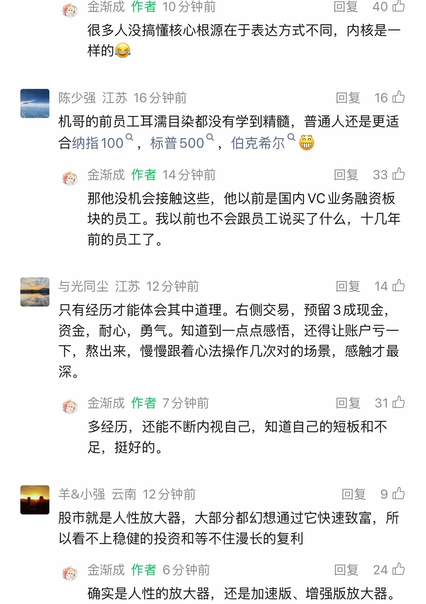
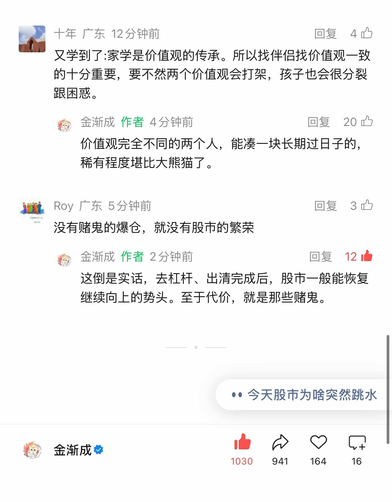

听，爆仓的声音~
识别文字连续阅读 · 原图附后
原始 PDF 不公开，本页展示捕获页面的截图。 识别文字按页序连续显示，全部原始截图附在文末，便于对照。文字由视觉转录整理，尚未经人工逐字核对，可能存在错字、漏字、漏行、顺序或断行错误。留言与作者回复仅限截图中可见的内容，不代表完整线上留言，也未据此推断留言总数。
OCR 识别提示（待核对）
- OCR/视觉转录文字，尚未逐字校对；可能错字、漏字、漏行，数字、姓名、表情、标点及断行也可能有误，请以截图为准。
- 这里只保留 PDF 已截到的正文、留言和作者回复；截图以外的留言不在此存档中。
- 未从截图推断留言总数或回复关系；手机界面文字也可能混入 OCR。
- 方括号中的表情说明是转录注释，原始表情请对照截图。
- 页面边界仅露出少量字形的重复行归到文字主体可见的相邻页；不推断缺失内容。
识别文字
文字按截图页序整理；页边重复行仅保留一次，原图和 PDF 完整保留。方括号中的表情说明为转录注释。
第 1 页对照原图
[顶部状态栏]
08:39 · 静音 · 5G · 电量71%
听，爆仓的声音~
原创 天玑 金渐成 2026年11月23日 08:17 中国香港
1018人 AI摘要
这轮下跌，属于急跌，短期内快且大幅度下跌。
我在11月2日的更新中《等风雨来~》，提醒这轮下跌的来临:中期选举前后波动加剧+现金储备创新高+预兆已现。
这轮下跌，市场先交易的是AI资本开支的信用风险，CoreWeave四只债券收益率升至16%，说明投资者开始要求AI低评级债给出违约补偿；同时，10年期美债的收益率一周内下跌23个基点。
低风险资产受追捧，AI相关信用资产被抛售。这轮下跌，是AI高估值遇到信用利差重新定价，AI链条的信用收缩，但恐慌级别高于基本面恶化级别。
第 2 页对照原图
真正放大跌幅的，是风险平价、CTA、ETF赎回和保证金追缴带来的被动去杠杆，股票跌导致波动率上升，进而影响基金降仓，最终导致流动性好的资产先被卖。
美债收益率下跌，说明终极避险仍是美债，美元流动性紧张时，黄金反而成了可卖资产。
因此黄金、白银、美股、AI股等会同时下跌。
存储链转向周期见顶，海力士跌6成，美光腰斩，市场不再信“永远缺存储”那套说辞，而是按周期股开始定价。
存储链能不能反弹，短期可以看日韩的救市等措施，中长期要看AI服务器订单重新上修，以及库存去化。
整体而言，这轮下跌，更像AI高估值、风险溢价上升、仓位拥挤的综合结果。什么时候反弹，最终要看信用利差企稳。
这些天身边的人咨询得也多，老手相对还好，但应付这样短期急跌，也不容易；三年内的新手，担惊受怕、心有顾虑、手忙脚乱胡乱操作一通的居多。
第 3 页对照原图
绝大多数普通人不需要做期权，这点之前说过（对抗时间的最优解~），因为期权一开始就是为大体量资金的持仓服务和设计的。
这轮下跌，听到无数爆仓的声音，期权和杠杆集中在大盘、芯片、存储三大板块，爆仓爆得血流成河。
在美股市场，把投资搞成赌博，也是没谁了。这或许也是巴菲特为什么说“赌场开在教堂隔壁”的原因。
有个离职几年的员工，这些年一直在炒股，大A和美股都买。这轮先在大A亏了6成，后在美股因为杠杆又亏了5成，前些天找我借钱，我没理他，不会借钱给赌鬼。
去年4月已经跟他说过，别以炒股赚差价的心态去买股，容易急躁和频繁操作导致踩坑；要做在低位买资产的事，用这种心态在资本市场才容易有收获。
可惜，没听进去。大多数人其实都不容易听劝，劝了都白劝，也没必要劝，自己多踩踩坑，多经历就好了。
过去几年，我曾数次提过建议:深耕自己的主业，做大做强现金流;用闲钱去做投资，当副业逐步去学习和做好即可。
第 4 页对照原图
现金流很重要，它关系到你的投资动作和结果，能否顺利达到预期，或者超预期。
现金流强大，资金储备足，投资时就没有那么多顾虑，买下去后能心态平和地长期去持有，不在意短期内的涨跌。
你们别只看我表面很从容，却忘了这份从容来源于强大的现金流和现金储备：
持仓普遍做成低成本/负成本持仓，涨跌都没多大压力，最多是账面收益率回撤；现金储备高，且随时能套现美债用于应对下跌，美债的持仓体量也大，一度占到防守型账户的6.5成，一般也有5成；公司的收益和分红+不动产租金+基金/保险等分红。
可调用的资金选高于绝大多数普通人。这也是为什么我选择左侧交易为主的重要原因，抄底过程中分批次+选好优质资产+体量雄厚的现金储备和现金流，即便过程中有什么错误，也能通过现金流扭转过来，不至于致命。
对我个人来说，让自己始终保持有补仓能力+持续不断的现金流，是支撑长期投资且长期持有的基础。
第 5 页对照原图
右侧交易会更适合绝大多数人，等筑底信号明显了再入手，更稳妥，更安全。这几年说了挺多次的，但能听进去的不多，正如不断重复的“宽基指数适合大多数人”一样。
美股七巨头这类个股都不好操作，就尽量不要去碰那些更高波动的个股了，盈亏同源，风险意识不够的话情况下，踩坑的机率很大。
知道而没去做，往往是由于不甘心，知道和做到是两码事。怎么用自己能接受的语言说服自己去接受，就显得很重要。
语言即世界。
正如你说一个人好吃懒做又爱玩，他/她可能会跟你急眼。但你换个表达方式，说他/她的爱好是旅游、美食和岁月静好，他/她会觉得你真懂他/她。
… …
这两天准备再给家庭配置一些防守型资产，把资产的安全垫再增厚些。
第 6 页对照原图
这不是要让孩子做个啃老族，只是给他们/家庭做个物质层面的保障，让他们能没有忧虑地去追寻自己想走的路。
两千多年前《管子》和《史记》已经说得很透彻了:仓廪实而知礼节，衣食足而知荣辱。
这些年，我的想法有了不小转变:
以前觉得要给孩子留下兜底资产，确保他们不会阶层滑落；现在认为，这只是基础保障，更重要的是把风险控制和生财、守财的能力/技能尽可能传授给他们，让他们有能力创富和守富。
爹有妈有都不如自己有，富二代不如创一代的根源就在这，本质上还是能力的区别，对财富的创造、支配能力，以及风险意识。
以前觉得家学很重要，现在依然这么觉得，只是对家学的定义有了内核上的本质变化。
家境良好不在于外表，而在于内核。
以前觉得家庭的传承除了物质，更重要的内核是思维与
第 7 页对照原图
经验，包括对社会底层逻辑、运行规则、世态人情的解构，是什么为什么怎么办，是一代一代人不断将自己的认知体系做了比较系统的整理，传给下一代，这样能更契合自身家族的成长和特点，契合很重要。
现在觉得，家学传承的内核，本质上是价值观的世代传递，价值观特别重要。技能和经验都可以补足，价值观如果歪了，就很难扭转过来，很难抢救。
家族传承显性的财富，是冰山之上；冰山之下，是隐性的财富，是家学，是孩子们从小到大看见并不断升级的商业认知和人性洞悉能力，更是价值观。
世界如此动荡，或许未来可能更加动荡不安；财富太容易在动荡中烟消云散，以家学为根，不仅能守富，也能创富。
就这样吧。
[文章导航]
历史文章 · 目录
< 上一篇 · 美股血崩了~
第 8 页对照原图
[文章提示与留言区]
作者提示: 个人观点，仅供参考
阅读 3.3万 · 不喜欢
留言 16
[留言 1]
XW｜广东｜15分钟前｜赞9
韩国股市又大跌，大家的共识存储还是周期股，虽然存储想证明自己不是周期股。
[作者回复留言 1]
金渐成（作者）｜11分钟前｜赞53
本来就是周期股，我高位清仓逃顶DRAM，就是认为存储属于周期股。
[留言 2]
Miss 花卷老太｜广东｜14分钟前｜赞14
左侧右侧我是看懂了，不过我能力有限，挂了阶梯单不管了，剩下的交给时间[捂脸哭笑表情]
[作者回复留言 2]
金渐成（作者）｜12分钟前｜赞43
对宽基指数来说，也是一种办法。
[留言 3]
NVDA守夜人｜北京｜15分钟前｜赞18
hahaha 好吃懒做又爱玩和旅游、美食、岁月静好[笑哭表情]我终于想明白我第一次看到这些词的违和感了
第 9 页对照原图
[作者回复留言 3]
金渐成（作者）｜10分钟前｜赞40
很多人没搞懂核心根源在于表达方式不同，内核是一样的[笑哭表情]
[留言 4]
陈少强｜江苏｜16分钟前｜赞16
机哥的前员工耳濡目染都没有学到精髓，普通人还是更适合纳指100，标普500，伯克希尔[露齿笑表情]
[作者回复留言 4]
金渐成（作者）｜14分钟前｜赞33
那他没机会接触这些，他以前是国内VC业务融资板块的员工。我以前也不会跟员工说买了什么，十几年前的员工了。
[留言 5]
与光同尘｜江苏｜12分钟前｜赞14
只有经历才能体会其中道理。右侧交易，预留3成现金，资金，耐心，勇气。知道到一点点感悟，还得让账户亏一下，熬出来，慢慢跟着心法操作几次对的场景，感触才最深。
[作者回复留言 5]
金渐成（作者）｜7分钟前｜赞31
多经历，还能不断内视自己，知道自己的短板和不足，挺好的。
[留言 6]
羊&小强｜云南｜12分钟前｜赞9
股市就是人性放大器，大部分都幻想通过它快速致富，所以看不上稳健的投资和等不住漫长的复利
[作者回复留言 6]
金渐成（作者）｜6分钟前｜赞24
确实是人性的放大器，还是加速版、增强版放大器。
第 10 页对照原图
[留言 7]
十年｜广东｜12分钟前｜赞4
又学到了:家学是价值观的传承。所以找伴侣找价值观一致的十分重要，要不然两个价值观会打架，孩子也会很分裂跟困惑。
[作者回复留言 7]
金渐成（作者）｜4分钟前｜赞20
价值观完全不同的两个人，能凑一块长期过日子的，稀有程度堪比大熊猫了。
[留言 8]
Roy｜广东｜5分钟前｜赞3
没有赌鬼的爆仓，就没有股市的繁荣
[作者回复留言 8]
金渐成（作者）｜2分钟前｜赞12
这倒是实话，去杠杆、出清完成后，股市一般能恢复继续向上的势头。至于代价，就是那些赌鬼。
[底部界面]
悬浮提示：今天股市为啥突然跳水
金渐成（认证标记）
点赞 1030 · 分享 941 · 喜欢 164 · 留言 16
原始图片 · 10 页
第 1 页 · 原始截图


第 2 页 · 原始截图


第 3 页 · 原始截图


第 4 页 · 原始截图


第 5 页 · 原始截图


第 6 页 · 原始截图


第 7 页 · 原始截图


第 8 页 · 原始截图


第 9 页 · 原始截图


第 10 页 · 原始截图


按日期浏览全部来源（同日按条目标识排序）
回到页首